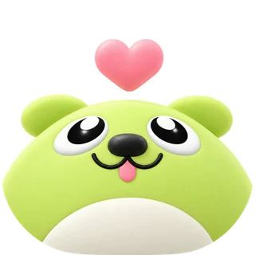

ПодхватИИ-помощник · первая помощь животным
Первая помощь тому, кто решил оказать помощь другому
Вы нашли животное и не знаете, что делать. Скаут задаёт шесть коротких вопросов, подсказывает безопасные первые шаги, находит помощь рядом и доводит случай до передачи хозяину или в учреждение.
 Скаут на связи круглосуточно
Скаут на связи круглосуточно
 20+ памяток, работают офлайн
Телефон и точный адрес не публикуются
20+ памяток, работают офлайн
Телефон и точный адрес не публикуются